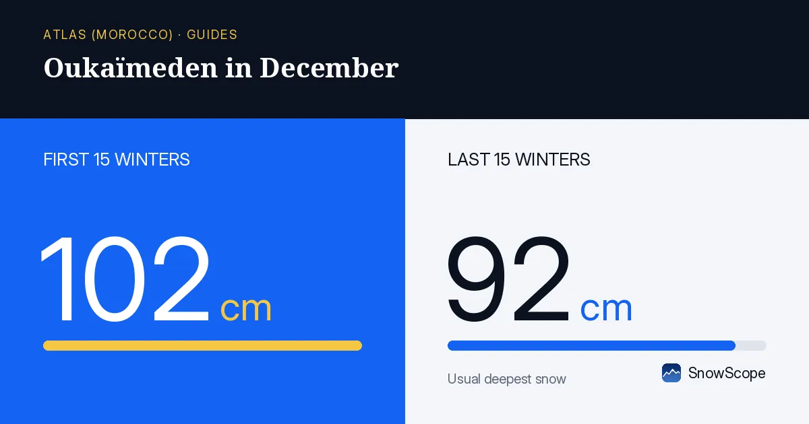

Oukaïmeden in December: your real snow odds, from 46 winters
Can you ski at Oukaïmeden in December? Sometimes, and our 46-winter history says how much. At mid-mountain, around 2929 m, a typical winter has only 16 cm of snow on 15 December, and only 11 % of winters have topped 50 cm there on that date.
See the live snow forecast for Oukaimden ski resort in the SnowScope appSnow depth, powder alerts and the 3D map, free.
Three heights, three close realities
We track Oukaïmeden at three heights: 2600 m at the base, 2929 m at mid-mountain and 3258 m at the top. In December the gap between them is small: on 15 December, a typical winter gives 15 cm at the base, 16 cm at mid-mountain and 17 cm at the top. In the Atlas, the storm makes the season, not altitude alone.
The first lasting snow usually arrives around 5 November, but it often melts between episodes.

Date by date
On 1 December, a typical winter has 12 cm at mid-mountain, and in 28 % of winters the slope is nearly bare (under 5 cm). On 15 December: 16 cm, 20 % of winters nearly snow-free, 43 % with at least 25 cm. On 25 December: 20 cm, with 41 % of winters at 25 cm or more. On 31 December: 24 cm, and 48 % of winters pass 25 cm.
The 50 cm mark, a real ski base, stays rare: 11 % of winters on 15 December at mid-mountain, 15 % on 31 December. At the top it is 15 %, then 20 %.

Week by week
Looking at the weeks where average snow reaches 50 cm at mid-mountain, the share of winters is 4 % for the week of 30 November to 6 December, 13 % for 7 to 13 December, 11 % for 14 to 20 and 13 % for 21 to 27. In other words, a guaranteed ski week does not exist here in December. A good weekend, it does.
A big December happens
A generous December, one winter in ten, gives 50 cm at mid-mountain on 15 December and 53 cm at Christmas. Last winter proved it: 33 cm at mid-mountain on 15 December 2025, then 78 cm on Christmas Day, before a peak of 132 cm and 149 snow days over the season.
On trend, nothing dramatic: 14 cm at mid-mountain on 15 December in a typical winter of the first 15 winters (1980-81 to 1994-95), 11 cm in the last 15 (2011-12 to 2025-26), with 40 % of winters above 25 cm in both periods.
And this year?
In mid-November, our map shows 0 cm at all three heights, and nothing is expected in the next seven days. That is not worrying in itself: November is nearly always lean here. The season peaks in March, with 53 cm at mid-mountain in a typical winter.
Tips for skiers
- Do not book a December trip far in advance: wait for a storm and go in the days that follow.
- Check our snow map the day before: in December, the gap between a bare slope and a ski day often comes down to a single storm.
- Lift opening depends on the resort, not just the snow: ask on the spot.
- Thin early-season snow: rocks are close, stay on groomed runs.
References and credits
- Wikipedia, Oukaïmeden (read 13 November 2026) en.wikipedia.org/wiki/Ouka%C3%AFmeden
- OpenSkiMap (mapped lifts and runs) openskimap.org/
About these numbers
Snow numbers: SnowScope snow history, 46 past winters (1980-81 to 2025-26) at the base, mid-mountain and top heights given, a reconstruction of past snow for an area corrected for height (ERA5-Land based; Snow_Hydro 1 km for Morocco), not the ski area's own snow reports. Current snow: the SnowScope snow map. Lifts, runs and heights: OpenSkiMap mapping. Prices: the official pages listed below, read on 13 November 2026; dynamic prices change with the date and with demand.
Cite this report
For research, teaching or the press: the numbers and charts are free to reuse under CC BY 4.0 with this citation.
SnowScope (2026), Oukaïmeden in December: your real snow odds, from 46 winters, https://snowscope.app/blog/en/2026/11/oukaimeden-decembre-chances-de-neige-46-hivers.html, accessed 2026-11-14
SnowScope (Atlas Labs). (2026, November 14). Oukaïmeden in December: your real snow odds, from 46 winters. SnowScope snow reports. https://snowscope.app/blog/en/2026/11/oukaimeden-decembre-chances-de-neige-46-hivers.html
BibTeX
@misc{snowscope2026oukaimedendecembrechance,
author = {{SnowScope (Atlas Labs)}},
title = {Oukaïmeden in December: your real snow odds, from 46 winters},
year = {2026},
month = nov,
howpublished = {\url{https://snowscope.app/blog/en/2026/11/oukaimeden-decembre-chances-de-neige-46-hivers.html}},
note = {Published 2026-11-14 13:29 UTC; accessed 2026-11-14}
}· CC BY 4.0 · Methods, data and tools →
Oukaimden ski resort: snow and temperature by height, this winter vs last (tools) →
Follow Oukaimden ski resort
Free: a message when fresh snow is coming, and the forecast every morning.
More snow reports

Michlifen, near Ifrane, has snow in short episodes rather than a season. What 46 past winters show, why the usual depth is zero, and how to be there on the right days.

December snow odds from 46 winters and checked day prices: Ski Cooper $49, Les 3 Vallées €75.70, Oukaïmeden no official tariff. Where a cheap December ski day works.

Himalaya snow cover in November 2026 from NASA MODIS: snow on 610,409 km² of ground above 2,000 m between the Hindu Kush and Bhutan, half the clear ground white from about 4,800 m in Nepal and 3,600 m in the Karakoram. The NDSI explained, plus shadows, cloud and the low autumn sun.